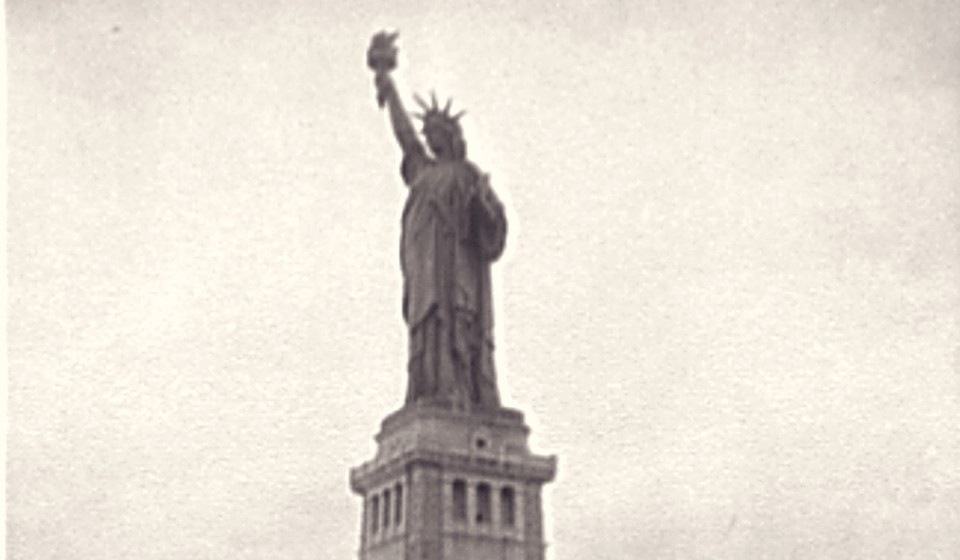

Liberty, New York Harbor, 1892. Photography collection, second floor.
Pink beet and feta dip3.75
Roast beets whipped with yogurt, garlic, lemon and dill. Warm flatbread wedges.
Toasted crumpets2.25
Whipped honey butter and a pinch of salt.
Mini bagel pizzas3.50
Hot salami, mozzarella and chili honey.
Fifth Avenue frank2.55
Mustard, green relish, onion, sauerkraut.